Документы
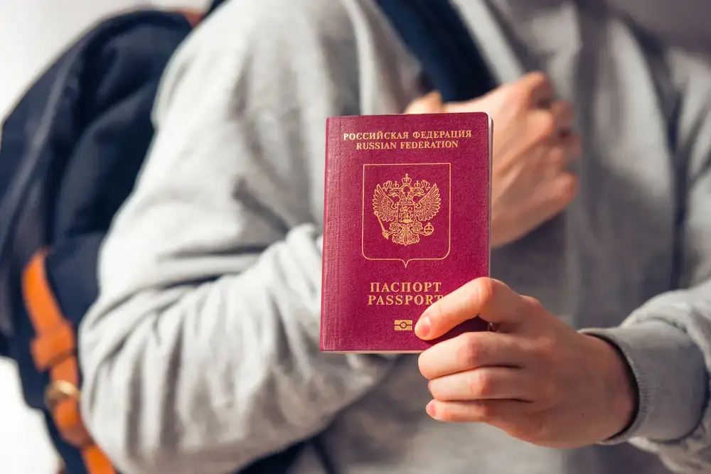
Перед отъездом
Проверьте наличие необходимых для поездки документов:
- загранпаспорт (паспорт должен быть действителен на весь период поездки);
- ксерокопия загранпаспортов (могут пригодиться при утрате загранпаспорта и в случае иных непредвиденных обстоятельств);
- авиабилеты или маршрут/квитанции электронного билета;
- ваучер;
- страховой медицинский полис.
Дети/Беременность
В случае путешествия с детьми или беременности:
Несовершеннолетний гражданин РФ, следующий совместно хотя бы с одним из родителей, выезжает из РФ по своему загранпаспорту.
Несовершеннолетний российский гражданин, выезжающий из Российской Федерации без сопровождения родителей, должен иметь при себе кроме заграничного паспорта нотариально оформленное согласие родителей на его выезд за границу с указанием срока выезда и государство, которое он намерен посетить.
Без необходимости оформления для ребенка отдельного заграничного паспорта несовершеннолетний гражданин РФ до 14 лет может выехать совместно хотя бы с одним из родителей, если он вписан в заграничный паспорт родителя, оформленный по старому образцу (к паспорту старого образца относится паспорт не биометрический, оформленный в соответствии с постановлением Правительства Российской Федерации от 14 марта 1997 г. № 298). В паспорт родителя в этом случае обязательно должна быть вклеена фотография ребенка, независимо от его возраста, на которой должна стоять печать паспортно-визовой службы. Отсутствие фотографии или печати является основанием для отказа ребенку в пересечении границы.
Выезд из РФ несовершеннолетних детей, сведения о которых внесены в паспорта сопровождающих их родителей, оформленные по старому образцу, осуществляется по срокам действия паспортов. На заграничные паспорта, оформленные по новому образцу (биометрический), распространяются нормы Постановления Правительства РФ №13 от 19 января 2010 года о том, что внесение сведений о детях в паспорт, удостоверяющий личность родителя, не дает права ребенку на выезд за пределы территории РФ без документа, удостоверяющего личность гражданина РФ за пределами территории РФ.
При следовании несовершеннолетнего российского гражданина через государственную границу РФ совместно с одним из родителей предъявлять письменное согласие второго родителя не нужно, если только от него ранее в пограничные органы не поступало заявление о несогласии на выезд из РФ своих детей.
Если у несовершеннолетнего ребенка и выезжающего с ним родителя разные фамилии, то рекомендуем взять с собой нотариально заверенную копию свидетельства о рождении для подтверждения родства. На практике отсутствие такого подтверждения служило основанием для отказа ребенку в пересечении границы.
Беременным женщинам
Перед полетом мы рекомендуем ознакомиться с правилами авиакомпании на необходимость предоставления письменного согласия врача на полет, а также иных документов для осуществления авиаперелета. Сотрудники авиакомпании имеют полное право отказать в авиаперевозке или потребовать медицинское освидетельствование в аэропорту вылета в случае нарушения правил.
Багаж
Собирая багаж:
Рекомендуем все ценные вещи, документы и деньги положить в ручную кладь и взять с собой в самолет. В багаж следует упаковать все металлические острые и режущие предметы (маникюрные ножницы, пилочки для ногтей, перочинный ножик и т. п.), а также любые жидкости, гели и аэрозоли (за исключением детского питания и лекарств, если в них есть необходимость) — проносить подобные предметы в ручной клади запрещено.
Не забывайте собрать и взять с собой аптечку первой помощи, которая поможет при легких недомоганиях, сэкономит время на поиски лекарственных средств и избавит от нежелательного общения на иностранном языке.
Прибытие
В РОССИЙСКОМ АЭРОПОРТУ ВЫЛЕТА/ПРИЛЕТА
Перед выездом в аэропорт получите дополнительную информацию о возможно произошедших изменениях в условиях вылета, используя сайт авиакомпании, выполняющей рейс, или по телефону ее справочной службы.
Рекомендуем заранее, не позднее чем за три часа до вылета, прибыть к месту регистрации пассажиров для прохождения установленных процедур регистрации, оформления багажа, и выполнения требований, связанных с пограничным, таможенным, санитарно-карантинным, ветеринарным и другими видами контроля, установленными законодательством РФ.
Таможня вылет
ТАМОЖЕННЫЙ КОНТРОЛЬ до начала путешествия
Перед полетом рекомендуем проверять действующие правила вывоза физическими лицами наличной иностранной валюты из РФ, товаров и иных предметов на сайте Федеральной Таможенной Службы customs.gov.ru.
Обращаем внимание на то, что в настоящее время действуют ограничения. Внимание! Запрещено перемещение на выезде и въезде:
- культурных ценностей,
- объектов фауны и флоры, находящихся под угрозой исчезновения,
- оружия и боеприпасов к нему без разрешения уполномоченных органов. Незаконное перемещение товаров или валюты через таможенную границу РФ или их недекларирование, либо недостоверное декларирование влечет за собой административную или уголовную ответственность. Внимание!
- принимать от посторонних лиц чемоданы, посылки и другие предметы для перевозки на борту воздушного судна.
Таможня прилет
ТАМОЖЕННЫЙ КОНТРОЛЬ по окончанию путешествия
Если вы не перемещаете через границу валюту и предметы, которые необходимо декларировать, то вам следует проходить зону таможенного контроля по «Зелёному коридору».
Актуальную информацию о ввозе валюты, товаров и иных предметов для личного пользования, вы найдете на сайте Федеральной Таможенной Службы customs.gov.ru.
Внимание!
Недекларирование товаров в случае превышения стоимостных или весовых норм, а также наличных денежных средств и (или) денежных инструментов влечёт за собой административную или уголовную ответственность.
Регистрация
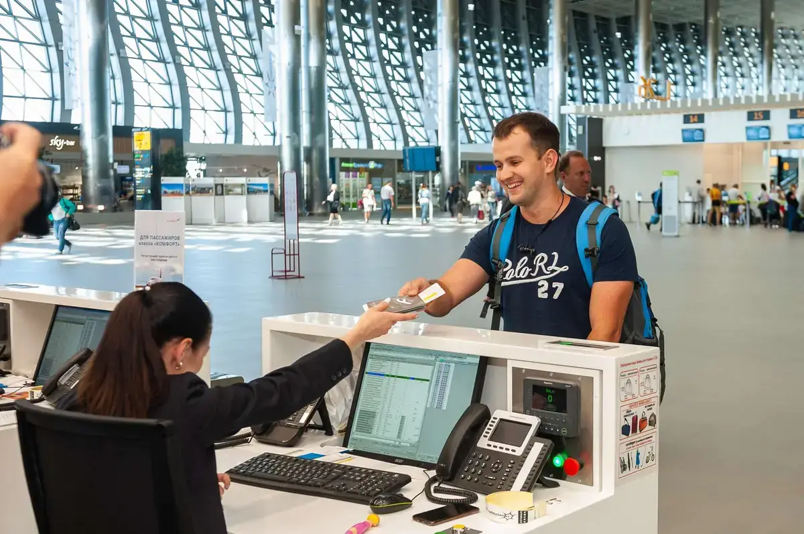
Регистрация на рейс и оформление багажа
До начала поездки настоятельно рекомендуем уточнить время начала и окончания регистрации на рейс, а также время посадки на борт. Указанную информацию вы можете посмотреть на официальном сайте авиакомпании. Помните, что у разных авиакомпаний могут быть свои правила. Регистрация пассажиров и оформление багажа производятся на основании именного авиабилета или распечатанных на бумажном носителе маршрута и/или квитанции электронного билета, а также заграничного паспорта пассажира. При регистрации пассажиру выдается посадочный талон, который необходимо сохранять до момента возможного предъявления авиакомпании претензий по качеству предоставленных услуг авиаперевозки.
Перед посадкой на рейс рекомендуем проверить номер выхода и время начала посадки на рейс на информационном табло в аэропорту. Пассажиру, опоздавшему ко времени окончания регистрации пассажиров и оформления багажа или посадки в воздушное судно, может быть отказано в перевозке.
Каждый авиаперевозчик устанавливает свои нормы провоза багажа, а также габариты и вес ручной клади, провозимой в салоне самолета. Уточняйте данную информацию перед вылетом. За провоз багажа сверх установленной нормы бесплатного провоза багажа взимается дополнительная плата по тарифу, установленному перевозчиком. Перевозчик имеет право отказать туристу в перевозе багажа, вес или объем которого не соответствуют установленным нормам.
Контроль
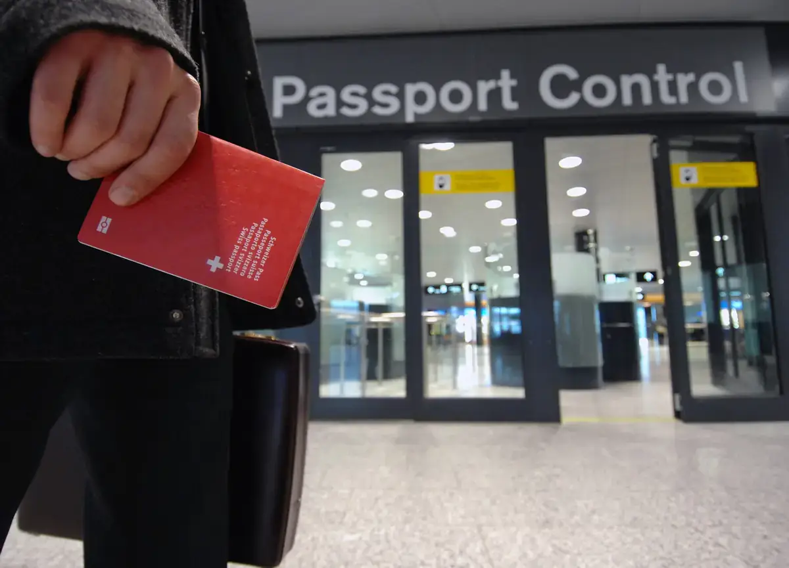
Паспортный контроль
Для прохождения пограничного контроля необходимо предъявить заграничный/внутренний российский паспорт. Пограничные органы ФСБ РФ при осуществлении пограничного контроля имеют право запрашивать у туристов дополнительные документы (авиабилет, посадочный талон, ваучер и т. п.), а также проводить опрос лиц, следующих через границу.
Санитарный контроль
Туристам сертификат о прививках не требуется.
Ветеринарный контроль
Животные подвергаются ветеринарному осмотру.
Если вы вывозите животных из России, то вам необходимо иметь комплект документов, подтверждающих, что они здоровы.
Как правило, следует иметь:
- ветеринарный паспорт,
- справку о состоянии здоровья (выдается любой государственной ветеринарной клиникой, в справке указываются сведения о прививках по возрасту, последняя прививка от бешенства должна быть сделана не ранее чем за 1 год и не позднее чем за 2 месяца до выезда),
- справку из клуба СКОР или РКФ (в справке указывается, что собака не представляет племенной ценности, справки из других клубов вызывают вопросы на таможне).
За каждое животное взимается гербовый сбор в размере 5 рупий и таможенный сбор в 250 рупий.
Кроме того, домашние кошки и собаки должны сопровождаться ветеринарным сертификатом международного образца и справкой о прививке против бешенства.
При ввозе в РФ животных и птиц необходимо иметь сопровождающее ветеринарное свидетельство, полученное в Государственной ветеринарной службе страны, где приобретено животное.
Запрещен ввоз на территорию РФ любых грузов животного происхождения, в том числе в ручной клади и багаже, при отсутствии письменного разрешения Главного государственного ветеринарного инспектора РФ. Без разрешения уполномоченных органов РФ запрещено ввозить и вывозить объекты дикой фауны и флоры, находящиеся под угрозой исчезновения.
Прилет/вылет
В аэропорту прилета/вылета Шри-Ланки
По прибытии в аэропорт Республики Шри-Ланка нужно последовательно:
- заполнить туристическую карту,
- пройти паспортный контроль,
- получить свой багаж,
- пройти таможенный контроль,
- выйти из здания аэропорта,
- найти встречающего гида с табличкой,
- предъявить гиду туристский ваучер.
При осуществлении перелета стыковочными рейсами принимающая сторона осуществляет встречу только в конечном пункте прилета.
Место встречи в аэропортах
Сотрудники туроператора встретят вас в аэропорту и проводят до трансфера.
Паспортный контроль
Паспортный контроль. Виза.
Граждане РФ, которые хотят посетить Шри-Ланку с краткосрочным визитом, могут получить Электронное туристическое разрешение (ЕТА) до своего прибытия в Шри-Ланку (ЕТА выдается онлайн), а также могут въезжать на территорию Шри-Ланки на срок до 30 дней с получением визы по прибытии в порту прилета. Оформление электронного разрешения ETA возможно только тем туристам, у которых срок действия загранпаспорта более 6 месяцев с даты окончания тура!
Важно:
с 15 октября 2025 все желающие посетить страну с краткосрочным визитом должны будут предварительно оформить электронное разрешение на въезд – ETA-визу. web https://www.eta.gov.lk/ (Srilankan Immigration). Заполнение ЕТА является обязательным. Выдается бесплатно для граждан России, Казахстана, Беларусии.Внимание!
Для граждан, не имеющих гражданства Российской Федерации, могут быть установлены иные правила въезда на территорию Республики Шри-Ланка. Получить информацию по этому вопросу следует в посольстве Шри-Ланки по месту гражданства.
Таможенный контроль
Таможенный контроль в Шри-Ланке
Ввоз и вывоз иностранной валюты не ограничен, но обязательна декларация сумм свыше 10 000 долларов.
Запрещен транзит индийской и пакистанской валюты. Ввоз и вывоз национальной валюты ограничен.
Без декларирования можно провозить:
- Из Шри Ланки 20 000 рупий
- Из РФ в Шри Ланку 15 000 рупий Дорогостоящие предметы и вещи также декларируются для последующего вывоза из страны.
Лицам старше 18 лет разрешен беспошлинный ввоз:
- до 2 бутылок (0,75 л) вина и до 1,5 л крепких спиртных напитков;
- до 250 мл туалетной воды и до 56 г (2 унции) духов, а также товаров для некоммерческого использования на общую сумму до 250 долларов;
- 1 блок сигарет.
Размер пошлины на ввоз сигарет зависит от их размера — за ввоз изделий длиной от 72 до 84 мм взимается 6,7 рупии за штуку, длиннее 84 мм — 7 рупий. Стоимость ввоза килограмма табака или сигар — 1300 рупий.
Запрещен ввоз:
- наркотиков,
- огнестрельного оружия,
- боеприпасов,
- взрывчатых веществ,
- холодного оружия,
- растений, плодов,
- мяса птицы,
- медпрепаратов (за исключением предназначенных для личного использования, на которые должен быть оформлен рецепт),
- материалов порнографического или пропагандистского характера,
- печатной или видеопродукции атеистической направленности,
- товаров коммерческого назначения (исключение составляют торговые образцы)
Демократическая Социалистическая Республика Шри-Ланка
О стране
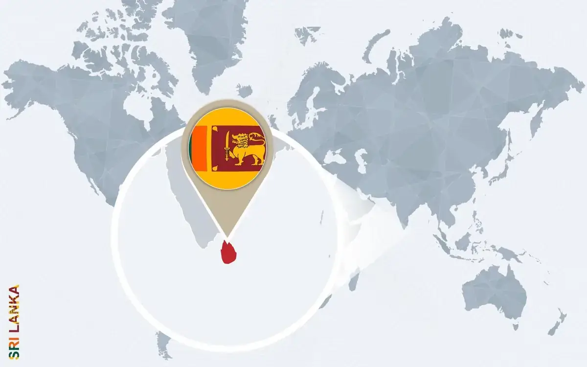
Демократическая Социалистическая Республика Шри-Ланка — государство в Южной Азии, на одноимённом острове у юго-восточного побережья Индостана. Со времён португальского вторжения и до обретения независимости в европейских языках страна называлась Цейлон.
Налог
Сервисный налог
С 01.01.2024 Правительством Шри-Ланки было принято решение ввести государственный налог на сервис в размере 18%. Все дополнительные товары и услуги, приобретенные туристами на месте (покупка воды в баре отеля, приобретение сувениров, массаж, услуги ресторана и т.д.), будут облагаться налогом.
Сумма налога будет добавляться отдельно в счет.
Время
Время
Разница во времени с Москвой — плюс 2,5 часа.
Климат
Климат
Субэкваториальный: северо-восточный муссон длится с октября по март, юго-западный — с июня по октябрь
Валюта
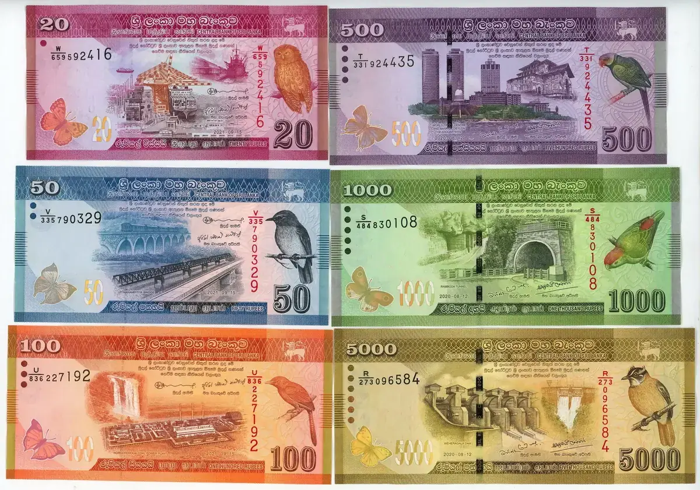
Валюта
Ланкийская рупия (Rs или LKR). Кредитные карточки Master Card, Visa, American Express к оплате принимают многие отели, некоторые большие торговые центры и магазины. Вне пределов курортных зон и крупных городов расплатиться безналичными средствами расчета практически невозможно.
Язык
Язык
Сингальский и тамильский. Английский имеет официальный статус языка межэтнического общения.
Население
Население
Приблизительная численность населения — 21,9 млн человек.
Большую часть населения острова составляют сингалы — 73,8 %.
Вторая по численности этническая группа — тамилы (11,2 %), которые делятся на две обособленные ветви: ланкийские тамилы и индийские.
Оставшуюся часть населения составляют потомки арабских торговцев — мавры (7,2 %); малайцы (0,3 %); потомки от смешанных браков коренных жителей с выходцами из Европы — бюргеры (0,2 %); коренные жители острова — веды (около 1 000 человек).
Религия
Религия
Буддизм (70 %), индуизм (12,61 %), ислам (9,71 %), христианство (7,45 %).
Обычаи
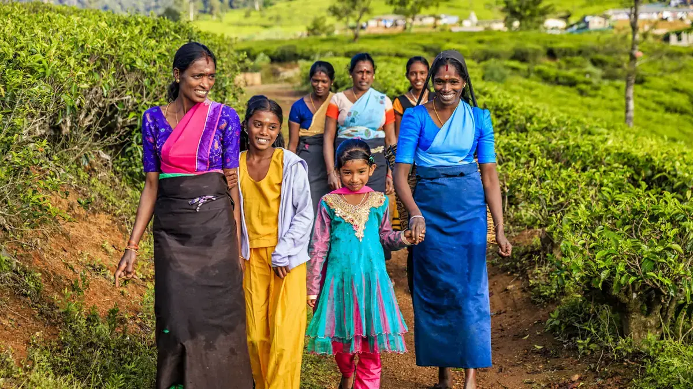
Обычаи
При посещении храмов принято оставлять головные уборы и обувь при входе; колени, спина и плечи должны быть прикрыты. Обходить храм следует по часовой стрелке, поворачиваться спиной к изображениям Будды нельзя.
Запрещено фотографироваться со статуями Будды или позировать на их фоне.
Туристам следует почтительно относиться к монахам и изображениям Будды, а также делать пожертвования в счет храмов.
Дотрагиваться до монахов или здороваться с ними за руку нельзя, а также сидеть, когда монах стоит. Если вы хотите поздороваться с монахом, то следует сложить вместе ладони рук, поднести их ко лбу, сопровождая легким наклоном туловища вперед.
Туристам рекомендуется носить легкую непрозрачную одежду из натуральных тканей — брюки (но не шорты и мини-юбки) и рубашки с длинным рукавом, особенно при посещении религиозных объектов. Во всех остальных случаях рубашки с коротким рукавом и одежда свободного фасона вполне допустимы.
Внимание!
Нудизм запрещен, а также нельзя загорать топлес во всех отелях. На Шри-Ланке в дни полнолуния (Poya Day) запрещено употребление спиртных напитков в общественных местах. В связи с этим в ресторанах острова и отелях, в том числе работающих по системе все включено спиртные напитки не подаются. Продажа спиртного в магазинах также закрыта.
Праздники
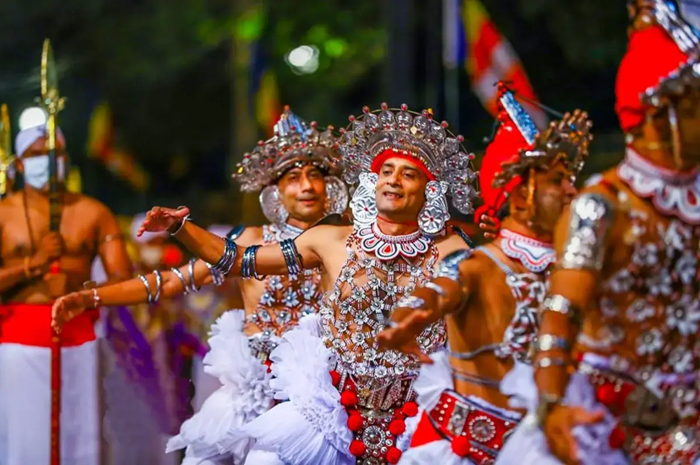
Праздники и нерабочие дни
На Шри-Ланке принято отмечание большого количества праздников (около 170). Кроме общегосударственных праздников на острове нерабочими днями являются религиозные праздники всех конфессий страны. Выходными днями, кроме субботы и воскресенья, являются дни полнолуния «Пойя».
Общегосударственные праздники:
4 февраля — День Независимости;
13 апреля — канун Нового года;
14 апреля — Сингальский и Тамильский Новый год;
1 мая — День Труда.
Транспорт
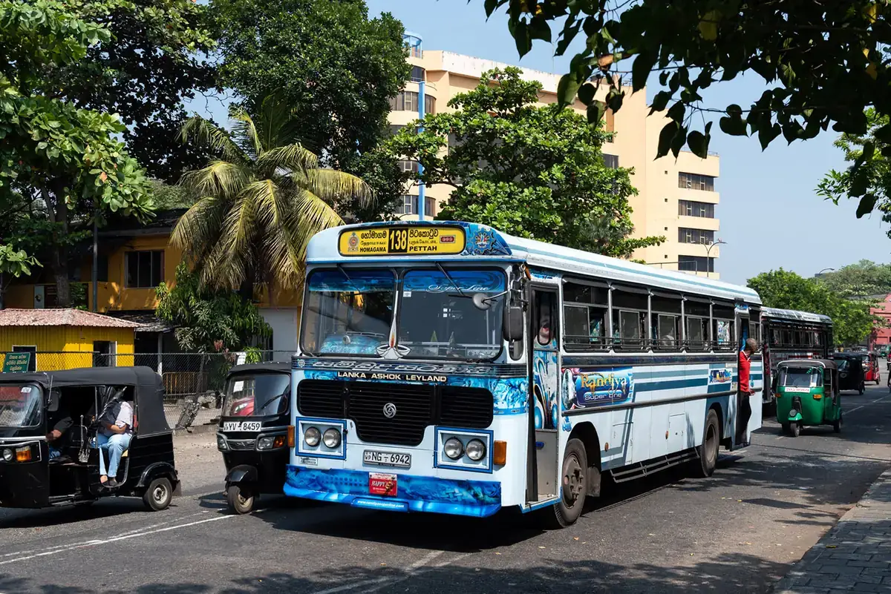
Транспорт
Движение транспорта на острове левостороннее.
Автобусы и поезда — единственные виды общественного транспорта. Стоимость проезда на частных и государственных автобусах одинакова и является одной из самых низких в мире. В городах скорость движения ограничена 56 км/ч, за городом — до 72 км/ч.
Аренда автомобиля
Арендовать автомобиль разрешается лицам не моложе 21 года с водительскими правами международного образца и кредитной карточкой.
Автомобильные дороги на Шри-Ланке узкие, не везде даже двухполосные, а в горах — узкий серпантин. Дорожных указателей мало, кроме того, правила дорожного движения практически не соблюдаются ни местными водителями, ни пешеходами.
В целях безопасности рекомендуем арендовать автомобиль с водителем.
Телефон
Телефон
Позвонить в Россию можно из отеля, местного пункта связи и интернет-кафе.
Международный телефонный код Шри-Ланки: +94.
Национальная справочная служба по бесплатному короткому номеру — 118 (с таксофона или стационарного аппарата) или 112 (с мобильного телефона), оператор может дать необходимую справку или перенаправит на нужный номер телефона.
Операторы всех экстренных служб Шри-Ланки владеют английским языком.
Туристическая полиция: +94 (11) 238-2209.
Аварийная медицинская помощь: +94 (11) 269-1111.
Чтобы позвонить в Россию, необходимо набрать:
00 - 7 - код города - номер телефона.
Чтобы позвонить из России на Шри-Ланку, необходимо набрать:
8 - 10 - 94 - код города - номер телефона.
Экстренные телефоны
- 119 — полиция,
- 122 — скорая помощь,
- 122 — пожарная служба.
В отеле
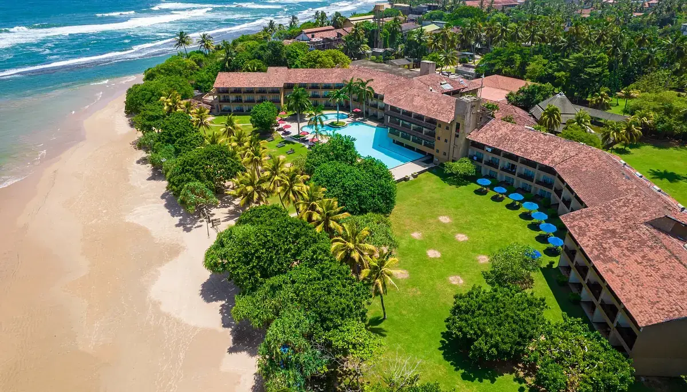
В отеле
В день приезда расселение осуществляется в соответствии с правилами, принятыми в отеле. Обычно начиная с 14:00 по местному времени. Просим ознакомиться на месте с условиями предоставления услуг в отеле и придерживаться установленных отелем правил.
В день выезда до наступления расчетного часа (как правило, 12:00) необходимо освободить свой номер и оплатить дополнительные услуги: телефонные переговоры, мини-бар, заказ питания и напитков в номер, массаж и др.
Свой багаж можно оставить в камере хранения отеля и оставаться на территории отеля до прибытия трансфера. Если вы не сдали номер до 12:00, стоимость комнаты оплачивается полностью за следующие сутки.
Питание в отелях Шри-Ланки
Формат питания зависит от количества гостей в отеле.
Если заполненность 50% и более – организовывается шведский стол.
Если меньше – питание предоставляется по меню.
Электросеть
Напряжение электросети
В городах — 220 В, 50 Гц. Ланкийские розетки имеют три входа. Для подключения привычной евророзетки необходим переходник, который можно купить на месте или попросить на ресепшн отеля. Перебоев с электричеством практически не бывает, но перепады напряжения могут быть опасны для чувствительных приборов.
Экскурсии
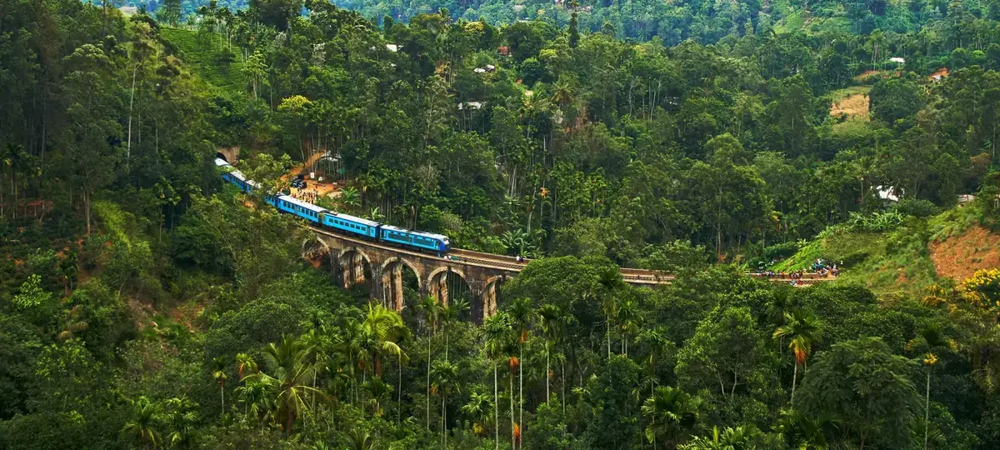
Экскурсии
Гид компании, принимающий вас на Шри-Ланке, во время встречи в отеле сообщит перечень предлагаемых экскурсий, их содержание, график проведения и стоимость.
Не рекомендуем приобретать экскурсии или прочие услуги в неизвестных вам туристских и экскурсионных агентствах. Вам может быть дана заведомо ложная информация о самой экскурсии, а также о качестве транспорта для ее организации. Вам может быть предоставлено для использования несертифицированное, неисправное или не соответствующее санитарно-гигиеническим нормам оборудование.
В регионах Диквелла, Тангалла, Хамбантота, а также в регионах Северо-Восточного побережья обслуживание гида происходит на удаленном доступе (посредством мессенджеров, по телефону). Гиды не приезжают в отель для проведения информационных встреч.
Кухня
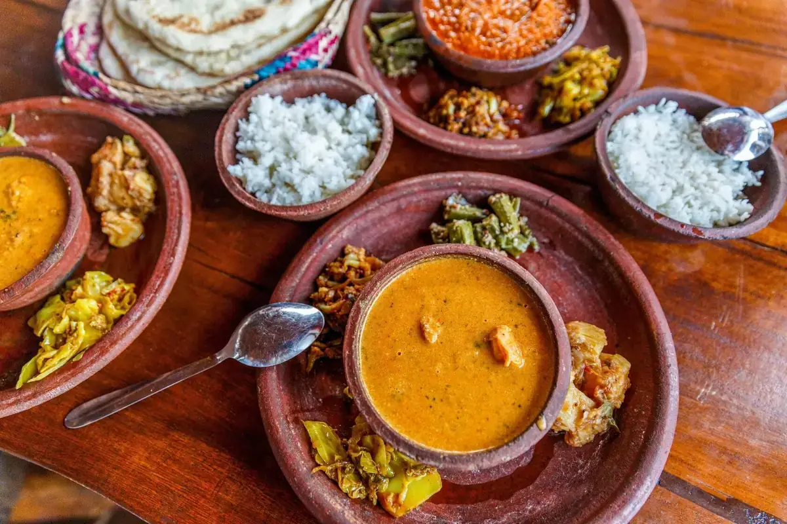
Кухня
Традиционная ланкийская кухня очень острая, но большинство отелей предлагают туристам блюда как европейской, так и национальной кухни.
В туристических центрах всегда можно найти рестораны восточной и европейской кухни, пиццерии и всевозможные фаст-фуды. Питание в ресторанах дешевле, чем в большинстве европейских стран.
На Шри-Ланке произрастает огромное количество фруктов: кокосы, авокадо, амбарелла, маракуйя, ананасы, бананы, помело, папайя, мангустины, дуриан, манго, гуава, рамбутаны, лонганы, саподиллы, персидские лимоны, мандарины, апельсины, плоды хлебного дерева и др.
Магазины
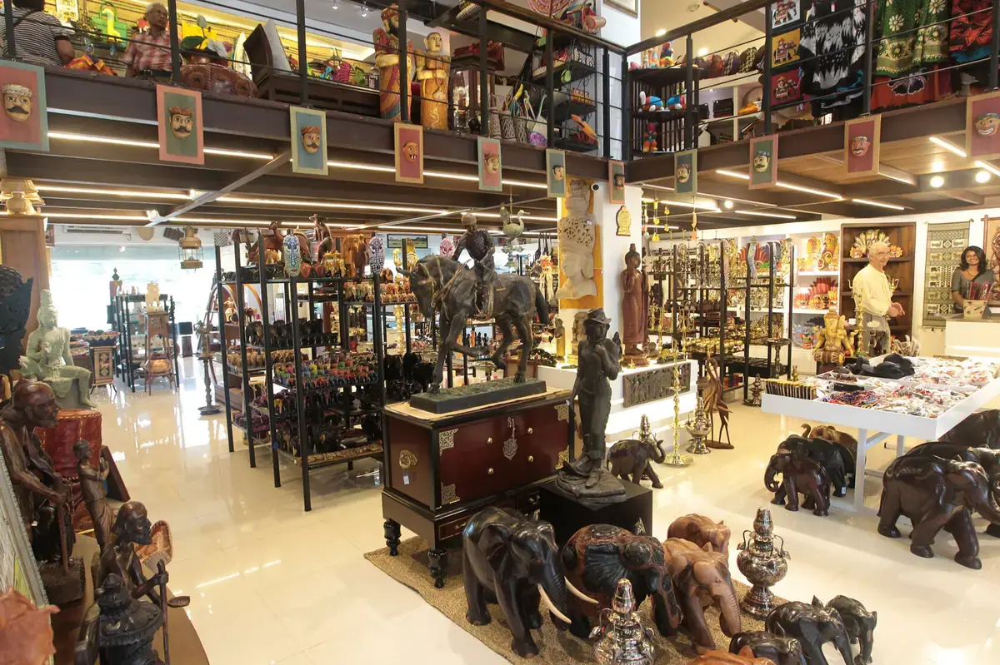
Магазины
Совершать покупки в любой азиатской стране особенно приятно из-за низких цен на многие товары. Время работы магазинов – с 09:00 до 17:00 (понедельник-пятница).
В Коломбо крупные магазины работают до 19:00, а туристические лавки в курортных районах закрываются еще позднее. Многие магазины работают и по субботам с 09:00 до 13:00.
Аптеки, как правило, работают с 08:00 до 20:00.
По воскресеньям закрыто практически все.
Шри-Ланка славится драгоценными камнями: сапфирами, рубинами, топазами, которые рекомендуем приобретать в специализированных магазинах.
Также известны во всем мире цейлонский чай, специи, изделия народных промыслов (маски, батик, вещички из кожи).
На рынках, в частных сувенирных и ювелирных магазинах стоит торговаться, цену можно снизить на 20-30 %.
В супермаркетах, торговых центрах и магазинах Duty Free в аэропорту цены фиксированные.
Безопасность
ПРАВИЛА ЛИЧНОЙ ГИГИЕНЫ И БЕЗОПАСНОСТИ:
Перед путешествием мы советуем ознакомиться с «Полезными советами российским гражданам, выезжающим за рубеж», размещенными на сайте МИД РФ: https://www.kdmid.ru/info-for-traveling-abroad/useful-tips-for-russian-citizens-traveling-abroad/, а также с памяткой МИД РФ «Каждому, кто направляется за границу», и памяткой Роспотребнадзора выезжающим за рубеж.
Не нарушайте правила безопасности, установленные авиакомпаниями, транспортными организациями, гостиницами, местными органами власти.
Категорически не рекомендуем приобретать экскурсии и дополнительные туристские услуги в неизвестных туристских и экскурсионных агентствах. Вам может быть дана заведомо ложная информация о самой экскурсии, вам не будет гарантирована безопасность предоставленных услуг и исправность используемого оборудования, тем самым можно подвергнуть себя серьезной опасности.
Перед поездкой рекомендуется взять с собой ксерокопии основных страниц (с фотографией, личными данными, отметкой о регистрации) заграничного и внутреннего паспортов РФ. Паспорт (или ксерокопию паспорта), визитную карточку отеля носите с собой.
При возникновении транспортных аварий, конфликтов с полицией, другими органами местной власти необходимо поставить в известность представителя принимающей стороны или сотрудников посольства/консульства РФ.
В период путешествия турист не имеет права на коммерческую деятельность или иную оплачиваемую работу.
Мойте руки перед едой. Не пейте сырую воду, особенно из открытых водоемов. Для питья рекомендуется использовать минеральную воду, которую можно приобрести в магазинах и барах отеля.
Не рекомендуется носить с собой большие наличные суммы. Кражи денег и вещей у туристов случаются довольно часто, как и махинации с фальшивыми долларами. Не следует вынимать из кошелька на виду у всех большие суммы денег.
Покидая автобус на остановках и во время экскурсий, не оставляйте в нем ручную кладь, особенно ценные вещи и деньги. Важные документы, наличные деньги и драгоценности лучше хранить в сейфе номера. Если в номере нет сейфа, его можно взять в аренду за плату у администрации отеля или сдать на хранение портье в сейф на стойке регистрации.
Рекомендуется сдавать ключ от номера на стойку регистрации отеля, в случае его утери поставить в известность администрацию.
Во многих отелях запрещается выносить из номера полотенца на пляж или к бассейну. Не приносите на пляж полотенца или инвентарь из номера без разрешения персонала.
Если в номере стоит мини-бар, то все напитки и закуски, взятые из него, как правило, должны быть оплачены.
Утеря паспорта
В СЛУЧАЕ ПОТЕРИ ПАСПОРТА
Незамедлительно обращайтесь в дипломатическое представительство, в консульское учреждение или в представительство МИД РФ, которое находится в пределах приграничной территории.
Вам необходимо получить свидетельство на въезд в РФ (REENTRY CERTIFICATE TO THE RUSSIAN FEDERATION), которое называется временным загранпаспортом. Выдается на срок до 15 дней для того, чтобы турист успел купить обратный билет и улететь на родину.
Для того чтобы вам выдали свидетельство на возвращение в РФ, необходимо представить следующие документы:
- основной документ, на основании которого будут предприниматься какие-либо действия, — заявление о выдаче свидетельства (образец заявления),
- две фотографии (цветные или ч/б, размер — 35х45 мм на однотонном фоне с четким изображением лица),
- внутренний паспорт РФ, также возможно предоставление других документов для подтверждения своей личности — водительских прав или служебного удостоверения.
Все вышеперечисленные документы регламентированы пунктом 20 Приказа МИД РФ от 28.06.2012 года № 10304.
Для граждан Республики Беларусь
В Шри-Ланке Консульство Республики Беларусь отсутствует.
Консульство Республики Беларусь расположено по адресу F6/8B,, Vasant Vihar, New Delhi, Delhi 110057, India / +91 11 4052 9338.
При утере паспорта и по дальнейшим действиям необходимо обращаться в Консульство Республики Беларусь. Консульство РФ в Шри-Ланке помочь с оформлением документов гражданину РБ не сможет.
Посольство
Посольство России в Коломбо
Адрес: 62, Sir Ernest de Silva Mawatha, Colombo 7, Sri Lanka.
Тел.: (+94-11) 257-35-55, 257-49-59.
Факс: (+94-11) 257-49-57.
Исключительно на случай возникновения экстренной ситуации (моб.): (+94-77) 665-44-15.
Часы работы понедельник: 08:00 - 14:30, 16:00 - 19:00; вторник-пятница: 08:00 - 14:30.
Е-mail: rusemb@itmin.net
Сайт: www.sri-lanka.mid.ru
Телефон горячей линии: +94775547327, +94779199806,
Посольство Демократической Социалистической Республики Шри-Ланка в РФ
Адрес: 129090, Россия, г. Москва, ул. Щепкина, 24.
Тел.: (+7-495) 688-16-20, 688-16-51, 688-14-63.
Факс: (+7-495) 688-17-57.
E-mail: moscow@srilankaembassy.org.